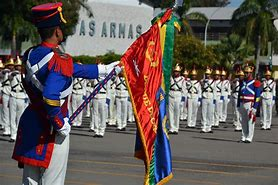
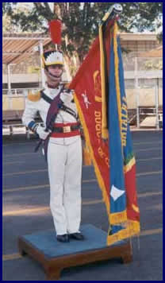
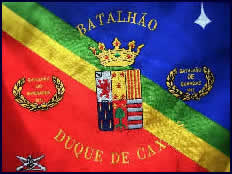

A emancipação política do Brasil ocorreu em 1822, quando o País libertou-se do jugo português.
Embora o processo de Independência tenha sido pacífico, as Províncias do Pará, do Maranhão, do Piauí, da Bahia e da Cisplatina rebelaram-se contra a nova ordem política vigente e declararam-se fiéis à Corte de Lisboa.
Com a finalidade de consolidar a independência do Brasil e apaziguar os revoltosos, em meio às campanhas de pacificação, D. Pedro I criou o Batalhão do Imperador, em janeiro de 1823.
O Batalhão do Imperador foi composto por militares de elevado conceito e valor, incluindo o Tenente Luís Alves de Lima e Silva.
O batismo de fogo da Unidade, sempre fiel ao Imperador, foi na Província da Bahia, onde haveria a maior resistência.
O Coronel José Joaquim de Lima e Silva ─ que comandava o Batalhão do Imperador ─ assumiu o Comando Geral do "Exército Pacificador" e ordenou uma grande ofensiva contra os portugueses.
O Exército Brasileiro entrou em Salvador, consolidando a retomada da cidade e o fim da ocupação portuguesa no Brasil.
Cabe destacar que nessa campanha o então Tenente Luís Alves combateu ao lado da então 1º Cadete Maria Quitéria de Jesus, célebre por ter-se disfarçado de homem para poder alistar-se e defender a nação que ora surgia (mais tarde, após ser descoberta, Maria Quitéria foi, por sua bravura, autorizada a permanecer na tropa, passando a utilizar um saiote à escocesa para distingui-la dos demais militares).
Com a transferência da Capital Federal para Brasília, essa unidade de elite foi transferida para o Planalto Central, passando a denominar-se BATALHÃO DA GUARDA PRESIDENCIAL.
Nas últimas décadas, o BGP vem cumprindo missões ímpares no âmbito do Exército Brasileiro, em especial ao executar a Guarda e o Cerimonial da Presidência da República, de Chefes de Estado e do Corpo Diplomático, ao ser empregado em Operações de Garantia da Lei e da Ordem e ao representar o Exército e o País em solenidades e eventos diversos, seja com a sua consagrada Banda de Música, seja com frações de tropa em demonstrações de ordem unida sem comando.
Como justo reconhecimento ao seu primeiro Porta Estandarte, que veio a ser relacionado como o Patrono do Exército Brasileiro, a Unidade, em 2001, recebeu a denominação histórica de "BATALHÃO DUQUE DE CAXIAS".

|  | Forma retangular, tipo bandeira universal, franjado de ouro. Campo fendido de vermelho à destra e azul à sinistra, cores heráldicas do Exército, com uma banda de verde e amarelo. Em brocante e em abismo, um escudo francês, filetado de ouro, que ostenta em suas cores originais, as armas das famílias Silva, Fonseca, Lima, Brandão, Soromenho e Silveira, da genealogia do “Pacificador”, sobreposto por uma coroa nobiliárquica de duque, de ouro, cravejada de esmeraldas e rubis. Ladeando o escudo duas inscrições: no flanco destro, “Batalhão do Imperador” 1823” e no sinistro, “Batalhão de Guardas 1933”, ambas em ouro e envolvidas e envolvidas por uma coroa de louros, também de ouro. No canto destro inferior do estandarte, o símbolo da arma de infantaria, de branco, em forma de losango, contida nas colunatas, símbolo da cidade de Brasília. Em arco de ouro, envolvendo todo o conjunto, a denominação histórica “Batalhão Duque de Caxias”, ínclito patrono do Exército Brasileiro, que de tenente a major, pertenceu ao Batalhão do Imperador, organização militar formadora do atual BATALHÃO DA GUARDA PRESIDENCIAL. |
|---|---|
|  | O Estandarte do BGP é possuidor das seguintes condecorações:
|